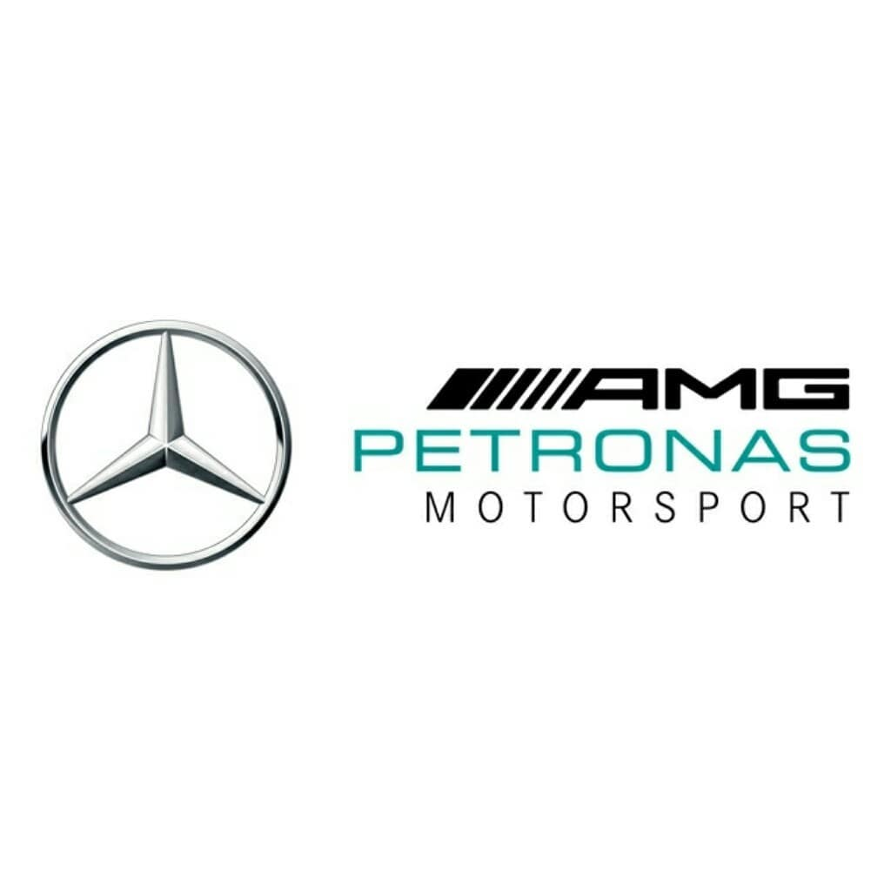

Ferrari F1 team
La Scuderia Ferrari fondée en 1929 par Enzo Ferrari, est depuis 1947 la branche chargée de l'engagement en compétition des voitures de la marque Ferrari. De nos jours, la Scuderia Ferrari a exclusivement recentré son activité sur le championnat du monde de Formule 1, dont elle est à la fois une pionnière et un pilier, détenant la plupart des records (nombre de saisons, de Grands Prix disputés, de points inscrits, de victoires, de podiums, de pole positions, de meilleurs tours, de titres de champions des pilotes et des constructeurs, etc.).

Hass F1 team
Haas F1 Team (engagée en Formule 1 sous la dénomination commerciale Rich Energy Haas F1 Team depuis 2019) est une écurie automobile américaine, fondée par Gene Haas, propriétaire de Stewart Haas Racing, présent en NASCAR. L'écurie fait ses débuts en Formule 1 en 2016.

Racing Point Force india F1 team
Force India (engagée sous la dénomination Sahara Force India Formula One Team depuis 2012) est une écurie de Formule 1 indienne qui a fait ses débuts en compétition à l'occasion de la saison 2008. Basée à Silverstone en Angleterre, Force India est créée à la suite du rachat et du changement de dénomination de l'écurie néerlandaise Spyker F1 Team. En 2018, l'écurie, en faillite, est liquidée et l'ensemble des actifs est racheté par un consortium mené par Lawrence Stroll. Une nouvelle écurie, Racing Point Force India F1 Team, est créée sur ses bases et prend sa suite en championnat du monde.

Mercedes F1 team
Mercedes Grand Prix (engagée en Formule 1 sous la dénomination commerciale Mercedes AMG Petronas Motorsport depuis 2017) est une écurie de Formule 1, appartenant au constructeur automobile allemand Mercedes-Benz qui a débuté en Formule 1 en tant que constructeur en 1954 sous le nom Daimler-Benz AG avant de se retirer du championnat du monde fin 1955, à la suite d'un accident grave aux 24 Heures du Mans. Mercedes a remporté sept titres de champion du monde des pilotes en 1954 et 1955 avec Juan Manuel Fangio, en 2014, 2015, 2017 et 2018 avec Lewis Hamilton et en 2016 avec Nico Rosberg. Le surnom Flèches d'Argent des monoplaces de la marque fut tout d'abord conjointement porté avec les bolides d'Auto-Union dans les années 1930 avant de devenir exclusivement celui de Mercedes en compétition.
Redbull F1 team
Red Bull Racing (de son nom complet Red Bull Racing Limited) est une société britannique qui engage l'écurie Red Bull Racing (engagée en compétition sous la dénomination commerciale Aston Martin Red Bull Racing depuis 2018) qui dispute le championnat du monde de Formule 1 sous licence autrichienne depuis 2007. L'écurie est fondée en 2005 avec le rachat par Red Bull de l'écurie Jaguar Racing. De 2010 à 2013, grâce à Mark Webber et Sebastian Vettel, Red Bull Racing remporte avec un moteur V8 Renault quatre titres de champion du monde des constructeurs tandis que Sebastian Vettel est couronné quatre fois de suite chez les pilotes.
Toro Rosso F1 team
La Scuderia Toro Rosso (engagée en 2018 sous la dénomination commerciale Red Bull Toro Rosso Honda) est une écurie italienne de Formule 1 fondée fin 2005, à la suite du rachat de l'écurie de F1 Minardi par le groupe autrichien Red Bull. Elle fait ses débuts en compétition à l'occasion du GP de Bahreïn lors du championnat du monde de Formule 1 2006. L'écurie est la junior team de Red Bull Racing qui forme des jeunes pilotes issus des formules de promotion Red Bull.
Mclaren F1 team
La McLaren F1 est une automobile conçue et produite par McLaren Cars, une filiale britannique McLaren Technology Group qui, entre autres, possède l'écurie de Formule 1 McLaren Racing. La voiture accueille un moteur BMW d'architecture V12 à 60° de 6,1 litres de cylindrée développant une puissance de 627 ch. La McLaren F1 a été conçue pour être « the finest drivers’ car ever built, or ever likely to be built »2 (en français : « la meilleure voiture de série jamais construite, ou susceptible d'être construite ») par une équipe d'une trentaine d'ingénieurs dirigée par Gordon Murray.

Renault F1 team
Renault F1 Team est une écurie de Formule 1, appartenant au constructeur automobile français Renault. Elle participe au championnat du monde de Formule 1 en tant que constructeur de châssis et motoriste de 1977 à 1985, de 2002 à 2011 et à partir de 2016. Sur les périodes intermédiaires, Renault s'en est tenue au rôle de motoriste.

Williams F1 team
Williams Grand Prix Engineering (engagée en compétition sous la dénomination commerciale ROKiT Williams Racing depuis 2019) est une écurie britannique de Formule 1, basée à Grove. Fondée en 1977 par Frank Williams et Patrick Head, l'équipe est actuellement la propriété de Frank Williams (52,25 %), Brad Hollinger (14,75 %), Patrick Head (9 %), le marché public (20 %) et le fonds en fiducie des employés (4 %).

Alpha Romeo F1 team
Alfa Romeo participa aux compétitions de Formule 1 en tant que constructeur automobile et fabricant de blocs-cylindres de 1950 à 1988. En 2019, Alfa Romeo remplace Sauber en devenant Alfa Romeo Racing.